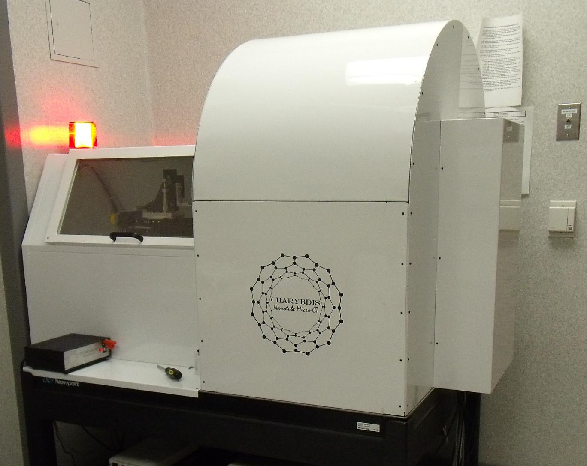
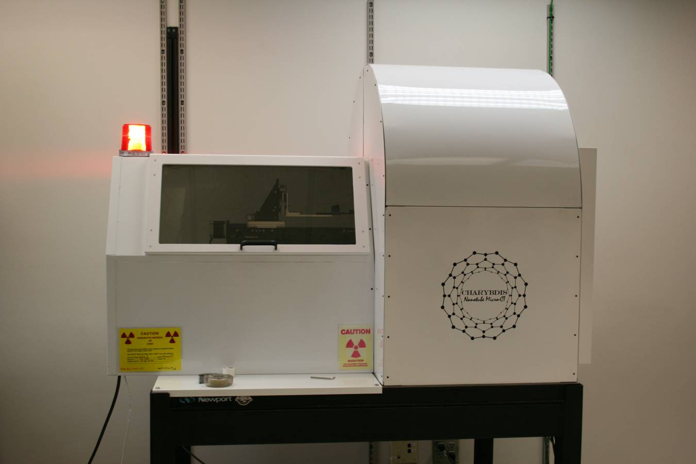

- "Second nanotube micro-CT scanner installed at University of Iowa Carver College of Medicine" (Mar 22, 2011).
- "First out-of-lab carbon nanotube micro-CT system delivered to UNC BRIC as a core imaging facility" (Aug 16, 2010).
- "Better Röntgenscans Door Koolstofbuisjes" - Carbon nanotube x-ray is reported by KIJK - a popular science magazine in Netherland (Oct 10, 2009).
- "Nanotechnologie ermöglicht neuartige Computertomographen" - Carbon nanotube x-ray is reported by German Pulic Radio - the German NPR (Sept 29, 2009).
- "Nanotube-powered X-rays" - Carbon nanotube x-ray is reported by The American Ceramic Society (Aug 13, 2009).
- "9 Ways Carbon Nanotubes Just Might Rock the World" - Carbon nanotube x-ray is reported by Discover Magazine (Aug 06, 2009).
- "Nanotube-powered X-rays" - Carbon nanotube x-ray is reported by Technology Review - the world's oldest technology magazine published by MIT (Aug 03, 2009).
- "Another look inside" - Carbon nanotube x-ray is reported by The Economist (July 30, 2009).
- "Nanotubes sharpen X-ray vision" - Carbon nanotube x-ray is reported by Nature (July 28, 2009).
- Dr. Guohua Cao promoted to the rank of Research Assistant Professor in Department of Physics and Astronomy at UNC-Chapel Hill (Jan 2009).
- Dr. Guohua Cao wins UNC Postdoctoral Award for Research Excellence (July 2008).
- "Stationary digital breast tomosynthesis for breast cancer detection" - Carbon nanotube based stationary digital breast tomosynthesis (s-DBT) is highlighted by The SPIE Newsroom (Feb 2008).
- Dr. Guohua Cao relocated to Department of Physics and Astronomy at University of North Carolina at Chapel Hill to work as a Postdoctoral Scholar (Jan 2007).

Second nanotube micro-CT system has been shipped to University of Iowa as a user imaging equipment.

First out-of-lab carbon nanotube micro-CT system has been delivered to UNC BRIC to serve as a core imaging facility.